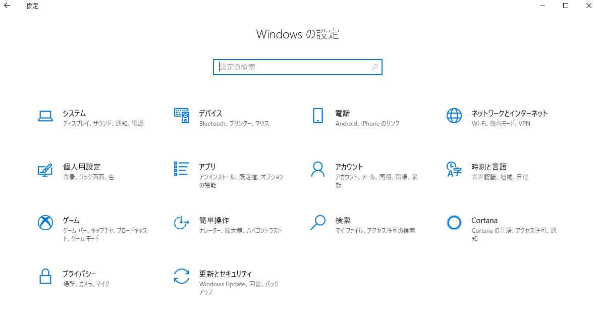
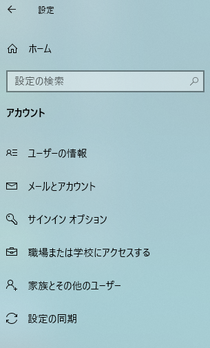
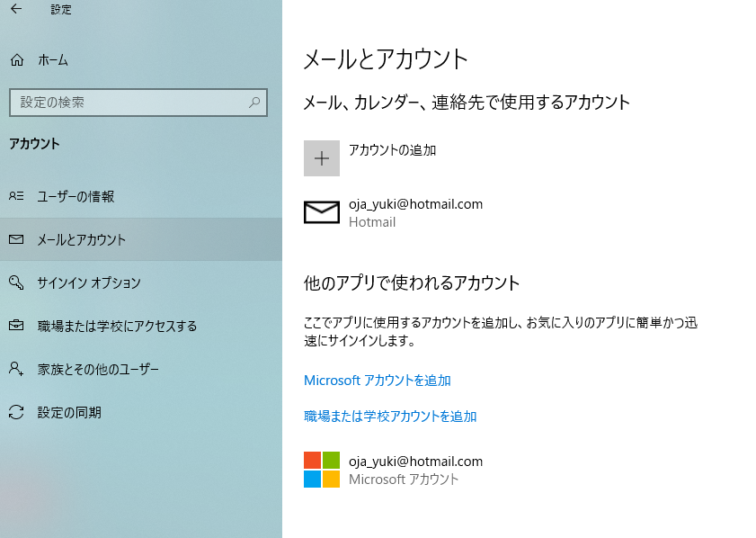
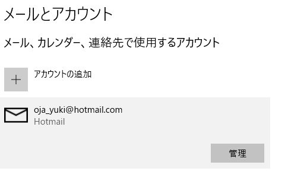
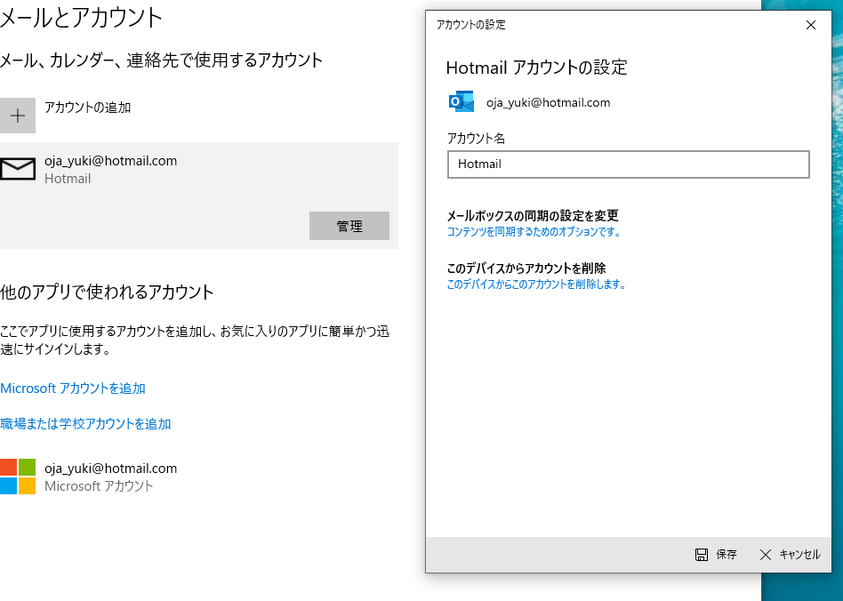
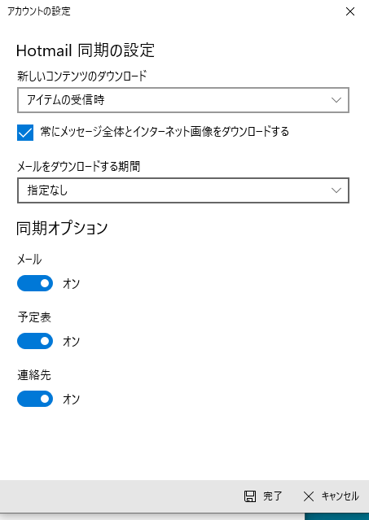
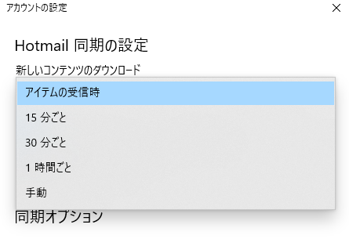
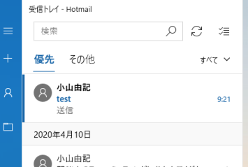

自分のPCで調べてみました。
最後の設定が「手動」や「●●分ごと」になっていませんか？
まずは順を追って。
| 1.まず、⚙「設定」画面を開けます。 |
|---|
 |
| 2.「アカウント」をクリックするとこの画面が出てきます。 |
 |
| 3.左側の「メールとアカウント」をクリックします。 |
 |
| 4.右側にあるアカウント（メールアドレス）をクリックすると「管理」というボタンが出てきます。 |
 |
| 5.「管理」ボタンをクリックすると、「アカウントの設定」画面が出ます。 中ほどにある「メールボックスの同期の設定を変更」をクリックします。 |
 |
| 6.「新しいコンテンツのダウンロード」が、 「アイテムの受信時」になっているかどうか確認してください。 他の設定も、わたしのと同じでいいかと思います。 |
 |
| 7.もし「アイテムの受信時」になっていなかったら、 この「新しいコンテンツのダウンロード」のボックスの一番右にある、をクリックして、 プルダウンメニューから選択し直してください。 |
 |
| 8.一番下にある「完了」を押すと、前の「アカウントの設定」画面に戻ります。 ここでも一番下にある「保存」を押すと、設定は終わります。 メールを開けてみてください。 |
 |
| ※次のようなアイコンは、リロード、更新、最新の状態にする、といったことを表しています。
インターネットを見るブラウザ（エッジ、edge、由美子さんによる愛称「ｅ」）などにも、 |